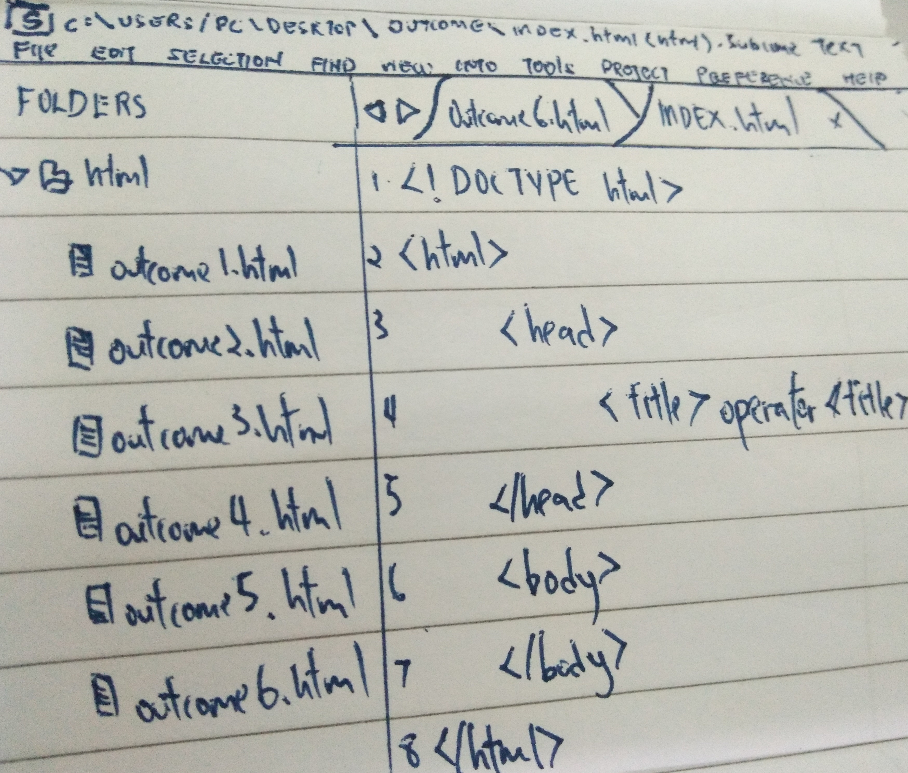
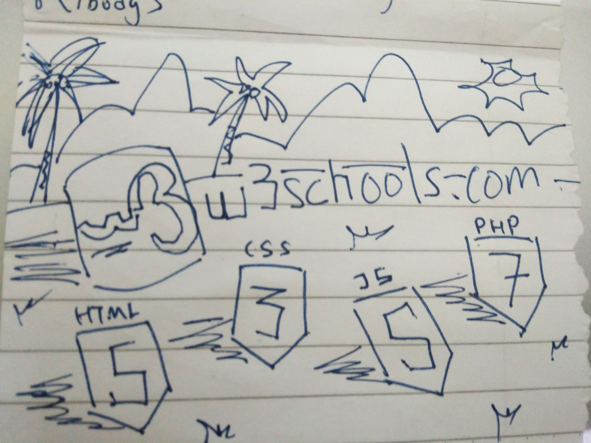

In a programming team, code readability is very importance because a readability code can let our teammate more quickly to understand what we are coding so they can modification or maintain in short time. After that, if our code is not readability, it will very hard to debug if our code have loophole and even need to create a new code and we would make our company loss a lot of money, time and human cost.

The modern coding guide for web pages development is w3school, a popular coding guide for everyone espacially for beginner, the coding guide webpage is contain a lot of coding language for example, HTML, HTML5, Javascript, CSS, framework and more. After that, w3school have many example for coding and it will explain the function of code with clear, we can use try yourself function to try the code immediatly.
The one of my favourites coding guide is w3school, a popular coding guide created in 1998 for everyone espacially for beginner to making webpage, the coding guide webpage is contain a lot of coding language for example, HTML, HTML5, Javascript, CSS, framework and more. After that, w3school have many example for coding, it will explain the function of code with clear and we can use try yourself function to try the code immediatly .It receives more than 10 million unique visitors monthly.
Some tools used to debug HTML or CSS problem is Firebug, a debugging tools free add-on for Firefox, it's contain a tons of powerful and easy to use features for web developer. Xyle Scope, a debugging application, it's an immensenly helpful and under appreciated tool for adjust HTML and CSS. Next, Closing Thoughts it can help for provede us with straight forward information to better code page.
A version control tools can solve team collaboration problems, it is GITHUB, GITHUB is a platform for everyone to use, internet hosting service or web-based, GIT is an open source version control system started by Linux Trovald. It's allows developers to easily collaborate, so we can download a new version of software, make changes, upload new revision and every developer can see the change and download it.

The CSS framework i like to recommended is Semantic ui. Semantic ui a software framework for let us can creating webpage with more faster and easier. A css framewoek normally will contain grid, a set of button, icon, form and graphical user interface. Grid is a system use for make webpage can change it layout on any device. Graphical user interface is meant like animation effect and slideshow. The special of Semantic UI is it's contain a lot of distinctive icon, image, and button like flag logo icon, and Semantic UI is very suitable to beginner because it is very easy to use.